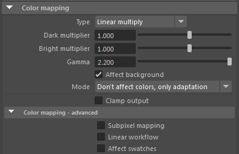
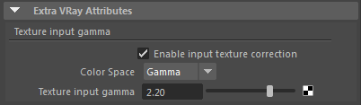
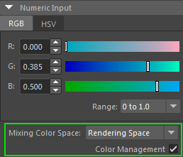
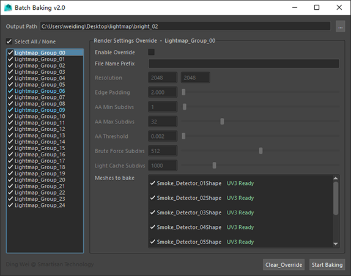

Lightmap 烘培¶
场景准备¶
- 检查单体的Asset
- 导入场景前需要确保有且只有一套UV，并命名为“UVChannel_1”。
- 确保所有参数类型为Phong
- 将资产导入Maya进行拼装
- 保持材质命名不变，diffuse、emission、transparency等参数等值转换为VRayMtl（工具实现）
- 根据需要对场景进行Lightmap分组，分组命名规范为：Lightmap_Group_00 ~ Lightmap_Group_xx
- 自动生成 UVChannel_3
Note
场景整合相关工具待开发（辅助分组，自动UV，材质转换 ）
VRay参数¶
- Linear Workflow
- VRay Render Setting:
- 所有颜色贴图需要添加VRay/Texture input gamma属性进行gamma校正：
- 对于Maya内置的Color swatch、Ramp、Light color等，不需再进行校正，Maya 2016的拾色器已经内置了Color Management，艺术家拾取的颜色就是最终渲染的颜色:

- 渲染质量调节
Sampler type = Adaptive (Adaptive DMC)
- 调整渲染质量的方法
调整 Min/Max subdivs/Threshold， 直至几何体，textures达到合适的质量
提高灯光 Sampling/Subdivs， 直至lighting，shadow和specular达到合适的质量
提高GI Subdivs，直至GI层达到合适的质量
提高材质上的Reflection/Refraction/SSS subdivs， 直至相应层达到合适的质量
保持SampleRate尽量少红色（红色表明DMC Samples不足，即便使用全部AA也无法满足Threshold，导致渲染效率下降）
Batch Baking 2.0的使用¶
- 功能
- 实现lightmap烘培自动化，批量完成大量物体烘培任务。
- 灵活选取全局/局部参数进行烘培。
- 灵活选择烘培组/物体。
- 启动
Smartisan_Tools -> Batch Baking 2.0
- 界面
- 
- Output Path: 设定lightmap输出路径
- 左侧列表显示场景中所有lightmap group。勾选的组将进行烘培。蓝色高亮显示表示该组有渲染参数Override。
- 右侧参数面板控制渲染参数Override。当“Enable Override”勾选时，将使用当前组自身的参数进行烘培。
- 右下“Meshes to bake”列表显示当前组内几何体，检查UVChannel_3状态。此列表内未勾选的几何体不会进行烘培（但仍贡献GI、阴影、反射 etc.）
- “Clear_Override”按钮重置所有override参数，“Start Baking”开始烘培进程。
Important
开始烘培前，请仔细检查设定的Output Path， 以免覆盖已烘培好的lightmap。 关闭Batch Baking对话框后，Output Path将被重置为默认值。